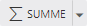

Ø

Auto-SUMME (ALT + =)Wenn für eine Spalte oder Zeile eine Summe benötigt wird, so kann diese über das Tool "Auto-SUMME" automatisch erzeugt werden. Hierfür muss einfach eine Zelle neben den zu summierenden Zahlen ausgewählt und der Button gedruckt werden… der Rest wird vom WinCalc durchgeführt.
Hinweis
Die Art der Summe kann individuell definiert werden. Bei Anwahl des linken Button-Bereichs wird immer eine klassische Summierung durchgeführt, über den rechten Bereich stehen diverse weitere Summenarten (z.B. Durchschnitt) zur Verfügung.